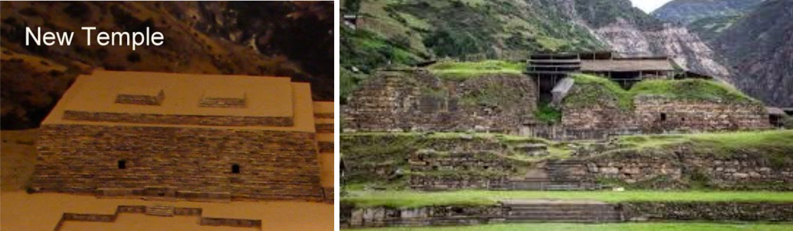
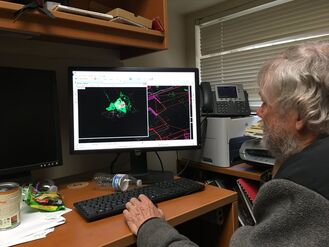
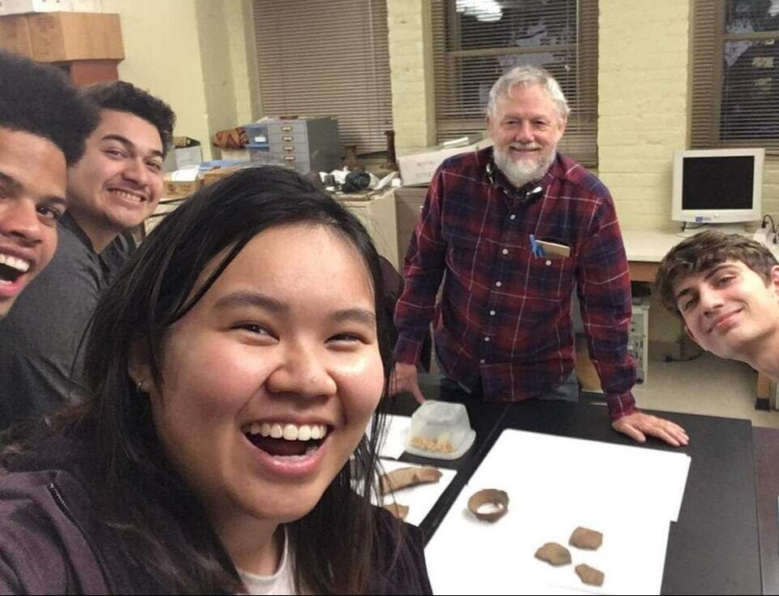

Chavin de Huantar AR Archaeology Project
In the summer of 2019, I worked at a UNESCO heritage site with my university’s archaeological field school. While there, my professor explained the facade of the main temple was destroyed due to looters, which presented an interesting conservation challenge. Visitors would believe the wooden support beams were original, while it would be costly and potentially damaging to repair the site. He envisioned a future where visitors could wear visors to see an overlay of a virtual reconstruction over the monument. Realizing the potential for immersive technology, I pitched a more accessible AR project for mobile phones. We were both ecstatic about the possibilities of an AR application, and I applied for software and travel funding through Engineers for a Sustainable World and sent emails to student groups to interview and recruit team members. You can read updates about the project at the ESW blog here: https://eswstanford.weebly.com/arvr-design-blog
 